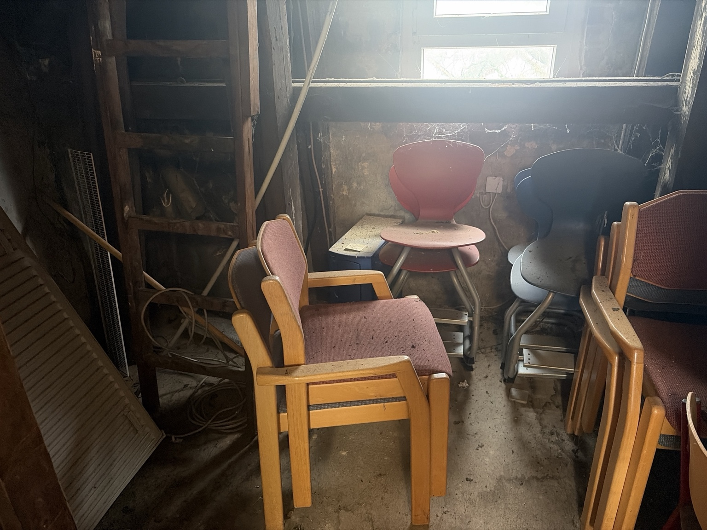

SCHILLERSCHULE · WICHTEL-CAM
● LIVE · SIMULATION
KAMERA 01 · GEHEIMRAUM
Geheimraum
Flur
4b Pinguine
4a Waschbären
Nachtaufnahme testen
Vollbild
Dies ist die erste funktionsfähige Vorschau mit echten Fotos und Live-Uhr. Animierte Wichtelvideos sind noch nicht hinterlegt.